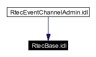

Main Page Namespace List Class Hierarchy Alphabetical List Compound List File List Namespace Members Compound Members File Members Related Pages
RtecBase.idl File Reference
Define the RtecBase module.
More...
This graph shows which files directly or indirectly include this file:

Detailed Description
Define the RtecBase module.
RtecBase.idl,v 1.2 2001/09/17 20:50:34 coryan Exp
-
Author:
-
Carlos O'Ryan <coryan@uci.edu>
Generated on Wed Jan 15 23:25:53 2003 for TAO_RTEvent by
 1.2.13.1 written by Dimitri van Heesch,
© 1997-2001
1.2.13.1 written by Dimitri van Heesch,
© 1997-2001